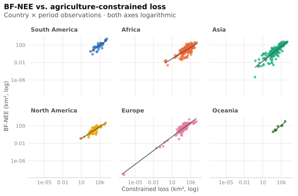
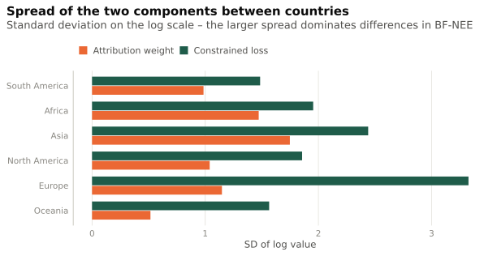
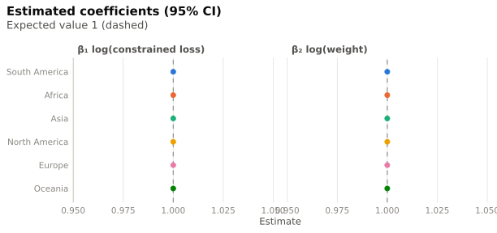

Regional regressions
How loss and attribution weight explain country footprints, by world region
Model
Per country \text{BF-NEE} = R^{crop} \sum_c S_c P_c + R^{past} P^{past} = R \cdot w, with the effective attribution weight w = \text{BF-NEE}/R (cropland and pasture part combined). A log-log model
\log(\text{BF-NEE}) = \beta_0 + \beta_1 \log(R) + \beta_2 \log(w) + \varepsilon
has \beta_1 = \beta_2 = 1 and R^2 = 1 by construction. Deviations therefore point to data problems – not to substantive effects. The model serves as a consistency check; the interesting part is how much each component varies between regions.
Only countries with BF-NEE > 0 are used (log scale); regions need ≥ 6 observations.
Which component varies more?

Coefficients

Largest residuals
Observations far from the fitted line usually indicate an inconsistency in the data (e.g. weights or loss on a different scale).